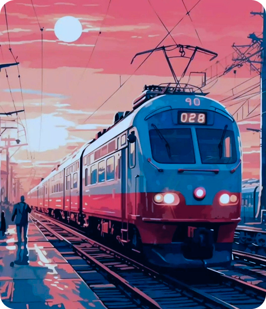

Поиск художников с интересными историями о начале творческого пути
Тема: Страх будущего
Нас интересуют работы, которые отражают переживания творческого человека, связанные с будущим, такие как страх чистого листа, страх первого шага, страх оказаться хуже кого-то, перфекционизм и страх не достичь успеха в творческой профессии. Мы ищем: Художников, работающих в любых медиа (живопись, графика, скульптура,инсталляция, видео-арт, цифровое искусство)
Организатор предоставляет:
Участие бесплатное
Требования к художнику:
Заявки принимаются до 1 января 2026 года включительно.
Вам потребуется подготовить:
Отбор произведет кураторская группа
Результаты будут объявлены 3 января 2026 года и отправлены на email отобранных художников. Выставка пройдет с 23 января 2026 года по 20 февраля 2027 года.
По всем вопросам: stantsiya.budushee@gmail.com
PDF-FILE